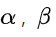
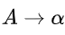

Dalam teori bahasa formal , ilmu komputer , dan linguistik , hierarki Chomsky
(terkadang disebut sebagai hierarki Chomsky-Schützenberger ) adalah hierarki penahanan kelas-kelas tata bahasa formal .
Hierarki tata bahasa ini dijelaskan oleh Noam Chomsky pada tahun 1956. Ia juga dinamai menurut Marcel-Paul Schützenberger , yang memainkan peran penting dalam pengembangan teori bahasa formal .
Tata bahasa formal
Tata bahasa formal jenis ini terdiri dari seperangkat aturan produksi terbatas ( sisi kiri → sisi kanan ), di mana setiap sisi terdiri dari urutan terbatas dari simbol-simbol berikut:
- satu set simbol nonterminal yang terbatas (menunjukkan bahwa beberapa aturan produksi masih dapat diterapkan)
- satu set simbol terminal yang terbatas (menunjukkan bahwa tidak ada aturan produksi yang dapat diterapkan)
- simbol awal (simbol nonterminal terkemuka)
Tata bahasa formal menyediakan skema aksioma untuk (atau menghasilkan ) bahasa formal , yang merupakan rangkaian (biasanya tak terbatas) rangkaian simbol dengan panjang hingga yang dapat dibangun dengan menerapkan aturan produksi ke urutan simbol lain (yang awalnya hanya berisi simbol mulai). Sebuah aturan dapat diterapkan dengan mengganti kemunculan simbol di sisi kiri dengan yang muncul di sisi kanan. Urutan aplikasi aturan disebut derivasi . Tata bahasa seperti itu mendefinisikan bahasa formal: semua kata yang hanya terdiri dari simbol terminal yang dapat dicapai dengan penurunan dari simbol awal.
Nonterminals sering diwakili oleh huruf besar, terminal dengan huruf kecil, dan simbol awal dengan S. Misalnya, tata bahasa dengan terminal { a, b } , nonterminals { S, A, B } , aturan produksi
S → AB
S → ε (dengan ε adalah string kosong)
A → aS
B → b
dan simbol awal S , mendefinisikan bahasa dari semua kata dalam bentuk

(yaitu n salinan a diikuti oleh n salinan b ).
Berikut adalah tata bahasa sederhana yang mendefinisikan bahasa yang sama:
Terminal { a, b } , Nonterminals { S } , simbol Mulai S , Aturan produksi
S → aSb
S → ε
Hierarki
Tabel berikut merangkum masing-masing dari empat jenis tata bahasa Chomsky, kelas bahasa yang dihasilkannya, jenis robot yang mengenalinya, dan bentuk yang harus dimiliki aturannya.
Perhatikan bahwa set tata bahasa yang sesuai dengan bahasa rekursif bukan merupakan anggota hierarki ini; ini akan benar antara Tipe-0 dan Tipe-1.
Ketik-0 tata bahasa
Tata bahasa tipe-0 mencakup semua tata bahasa formal. Mereka menghasilkan persis semua bahasa yang dapat dikenali oleh mesin Turing . Bahasa-bahasa ini juga dikenal sebagai bahasa yang dapat dihitung secara rekursif atau bahasa yang dapat dikenali Turing .
Perhatikan bahwa ini berbeda dari bahasa rekursif , yang dapat ditentukan oleh mesin Turing yang selalu berhenti .
Jenis-1 tata bahasa
Tata bahasa tipe-1 menghasilkan bahasa yang peka konteks . Tata bahasa ini memiliki aturan bentuk dengan nonterminal dan  dan string terminal dan / atau nonterminals. Senar dan mungkin kosong, tapi harus tidak kosong. Peraturan diizinkan jika tidak muncul di sisi kanan aturan mana pun. Bahasa yang dijelaskan oleh tata bahasa ini adalah semua bahasa yang dapat dikenali oleh robot berbatas linier (mesin Turing nondeterministik yang pita perekatnya dibatasi oleh waktu konstan panjang masukan.
Tata bahasa tipe-2
Tata bahasa tipe-2 menghasilkan bahasa tanpa konteks . Ini ditentukan oleh aturan formulir  dengan menjadi nonterminal dan menjadi string terminal dan / atau nonterminals. Bahasa-bahasa ini persis seperti semua bahasa yang dapat dikenali oleh robot tarik - turun non-deterministik. Bahasa bebas konteks — atau lebih tepatnya subset dari bahasa bebas konteks deterministik — adalah dasar teoretis untuk struktur frase dari sebagian besar bahasa pemrograman , meskipun sintaksnya juga mencakup resolusi nama yang peka konteks karena deklarasi dan cakupan . Seringkali subset tata bahasa digunakan untuk mempermudah penguraian, seperti oleh pengurai LL .
Tata bahasa tipe-3
Tata bahasa tipe-3 menghasilkan bahasa biasa . Tata bahasa seperti itu membatasi aturannya pada satu nonterminal di sisi kiri dan sisi kanan yang terdiri dari satu terminal, mungkin diikuti oleh satu nonterminal (regular kanan). Alternatifnya, sisi kanan tata bahasa dapat terdiri dari satu terminal, mungkin didahului oleh satu nonterminal (reguler kiri). Ini menghasilkan bahasa yang sama. Namun, jika aturan reguler kiri dan aturan reguler kanan digabungkan, bahasanya tidak perlu lagi reguler. Peraturan juga diperbolehkan di sini jika tidak muncul di sisi kanan aturan mana pun. Bahasa-bahasa ini persis semua bahasa yang dapat ditentukan oleh robot negara hingga . Selain itu, rumpun bahasa formal ini dapat diperoleh dengan ekspresi reguler . Bahasa reguler biasanya digunakan untuk menentukan pola pencarian dan struktur leksikal bahasa pemrograman.
Setiap bahasa reguler bebas konteks, setiap bahasa bebas konteks peka konteks, setiap bahasa peka konteks bersifat rekursif dan setiap bahasa rekursif dapat dihitung secara rekursif. Ini semua adalah inklusi yang tepat, artinya ada bahasa yang dapat dihitung secara rekursif yang tidak peka konteks, bahasa peka konteks yang bukan bahasa bebas konteks dan bahasa bebas konteks yang tidak teratur.